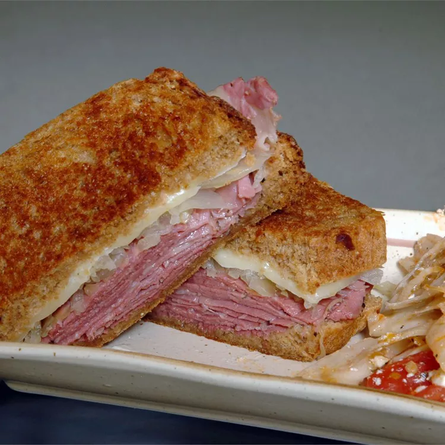

Pastrami Reuben Sandwich

Description
Yummy Pastrami sandwiches good for lunch or any meal.
Ingredients
- 8 slices rye bread
- ¾ cup thousand island dressing
- 1 (16 ounce) can sauerkraut, drained
- 8 slices Swiss cheese
- 8 slices pastrami
- ¼ cup margarine, softened
Steps
- Spread each slice of bread with thousand island dressing. Top 4 of the bread slices with sauerkraut, cheese and pastrami. Place remaining bread slices on sandwich. Spread margarine on the outsides of each sandwich.
- Heat a large skillet over medium high heat. Grill until browned, then turn and grill until heated through, and cheese is melted.